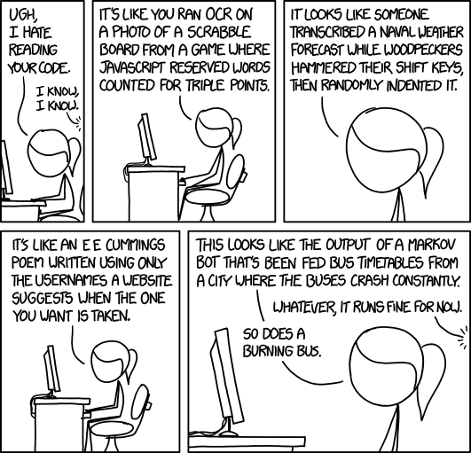

Reproducible Research and Tools
Filipe Fernandes
Aug 24, 2018
Ocean sciences is way more difficult
Numerical model example
- data preprocessing provenance
- data assimilation techniques/parameters
- numerical model parameters
How to properly document all that so others can reproduce the simulation?
Discussion time
- What measures do you take to ensure your analyses are:
- reproducible,
- replicable,
- robust?
Simple steps to reproducible research
- record the project’s provenance
- data and metadata curation
- establish a testing/analysis workflow
- test, document, and publish your code…
What are we going to do today?
-
record the project’s provenance
-
data and metadata curation
-
establish a testing/analysis workflow
- test, document, and publish your code!
Why?
In research, experiments/results are not trusted unless:
- The experimental setup is tested
- The method is well-documented
- We can demonstrate that our results are reproducible and reliable
So why would scientific software be any different?
Clear code is paramount

As is good practices for the scientific env creation

Introducing:
The code test-document-publish cookie cutter!
For the hack session
hands on… … python package choose a license https://choosealicense.com write doctest… … with a bug fix test / re-run / Travis-CI / CircleCI AppVeyor upload source dist and docs  DOI
DOI
The End